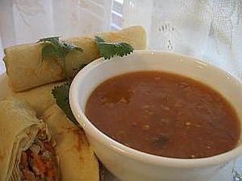

Bahan-bahan :
- 10 buah cabai merah keriting, diiris
- 6 bua cabai rawit merah, diiris
- 6 buah cabai rawit hijau, diiris
- 5 butir bawang merah, diiris
- 3 sendok makan taoco
- 2 buah tomat hijau kecil, dibelah empat
- 1/4 sendok teh garam
- 1/4 sendok teh gula pasir
- 100 ml minyak untuk menumis
Cara Membuat :
1. Tumis cabai merah keriting, cabai rawit merah, cabai rawit hijau, bawang merah, dan taoco sampai harum.
2. Masukkan tomat hijau. Aduk sampai layu. Tambahkan garam dan gula pasir. Kemudian aduk rata